1Install the software
- Run Smartech-Typing-Tutor-Setup and follow the installer.
- Choose the folder you want (the default is fine) and keep Create desktop shortcut ticked.
- Open Smartech Typing Tutor from the desktop shortcut or the Start menu.
2First launch: enter your name
The first time the app opens it asks for your name and an optional roll / reference number. Your results and certificates are saved under this name automatically, so you never have to type it before a test.
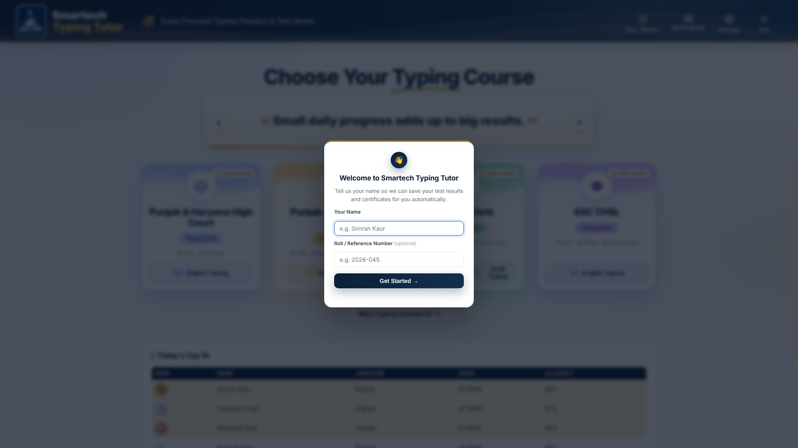
3The Dashboard
The Dashboard is your home screen. It shows a motivating typing thought (it changes by itself every few seconds), your course cards and Today's Top 10.
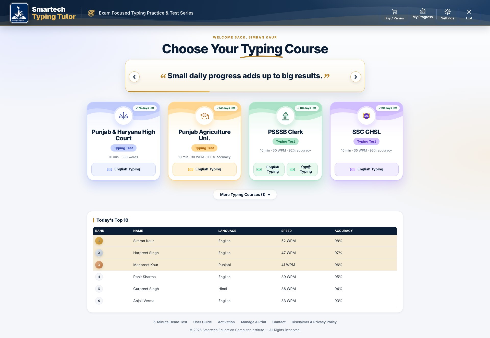
- Buttons at the top-right: Buy / Renew (prices), My Progress, Settings and Exit.
- Course cards: each card is one exam, for example Punjab & Haryana High Court or PSSSB Clerk. The badge on the card shows the days left for that exam, or Code needed if it is not unlocked yet. Press the language button on the card (English Typing, ਪੰਜਾਬੀ Typing) to open that course.
- Only four courses show at a time. If your institute has added more, press More Typing Courses under the cards to open the rest, and press it again to close them.
- Today's Top 10 lists the fastest students tested today across the centre. It needs an internet connection.
- Links at the bottom: 5-Minute Demo Test, User Guide, Activation, Manage & Print, Contact and Disclaimer & Privacy Policy.
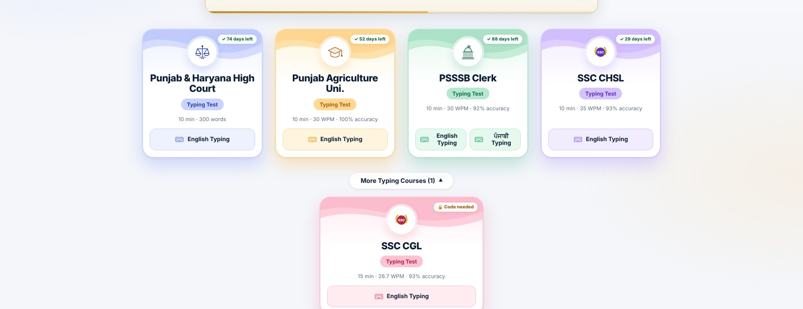
Every other page has a Dashboard button at its top-right corner that brings you straight back here.
4Buy / Renew
Press Buy / Renew at the top of the Dashboard to see what each typing course costs. The window lists every course with its buy price, its renew price and how long it lasts, and tells you how to get your activation code.
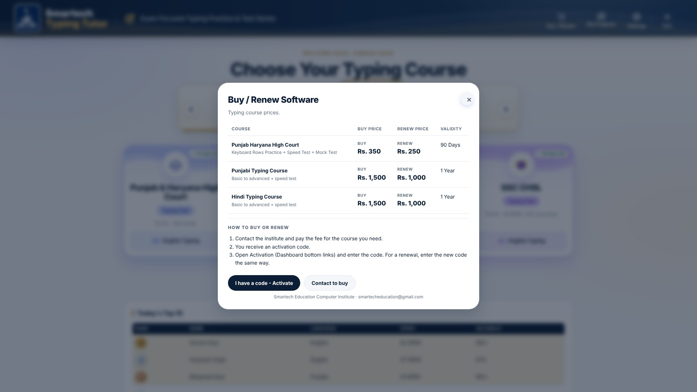
- Contact your institute and pay the fee for the course you need.
- You receive an activation code.
- Press I have a code - Activate and enter the code. A renewal works the same way: enter the new code.
Use Contact to buy to open the Contact page.
pricing.txt on your GitHub, so you can change them without a new installer. Each course is one ### Course name block with buy, renew and validity. See SETUP_Content_from_GitHub.md. Settings > Update everything now fetches it at once.5Activate your courses
Each course (English, Punjabi, Hindi) is unlocked with an activation code from your institute. Open Activation from the links at the bottom of the Dashboard.
- Type or paste the code into its box.
- Press Activate. An internet connection is needed for this step only.
- The card turns green and shows the expiry date and days remaining.
One access code can unlock several courses and tests at once. Your institute can give each of them its own number of days, for example 30 days for one test and 90 days for English. The Activation page lists every unlocked course and test with its own end date, so check the date for the one you are using.
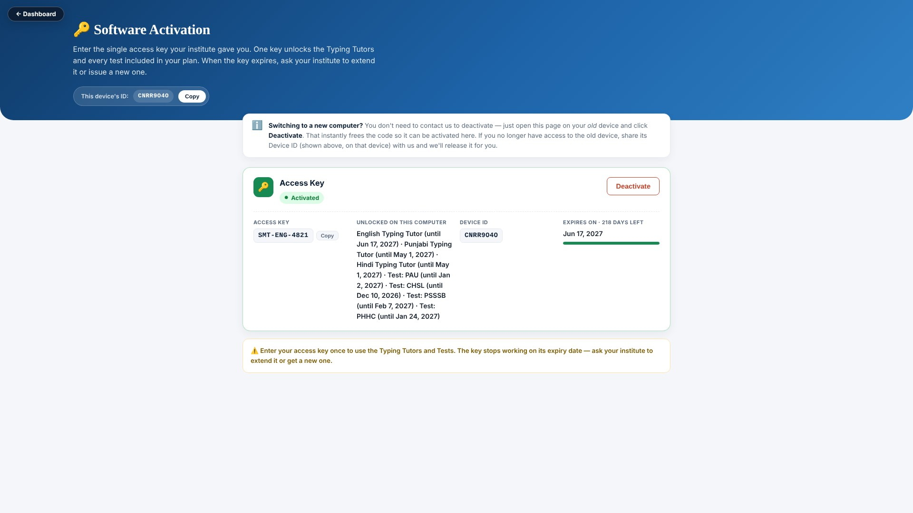
6Open a course: Keyboard Rows, Speed Test and Mock Test
Press English Typing or ਪੰਜਾਬੀ Typing on a course card. The page that opens has three cards at the top for the language you chose, and the exam's exercises below them.
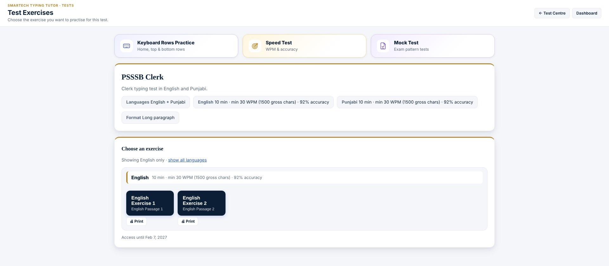
- Keyboard Rows Practice opens the typing course of that language: home row, top row, bottom row and more (see Typing lessons).
- Speed Test opens a timed drill in the same language (see Speed Test).
- Mock Test opens the Test Centre with all exam-pattern tests (see Mock Tests).
- Choose an exercise below the cards starts a real exam-style passage with this exam's time and pass rule.
If an exam has more than one language and you opened it from the Test Centre, you will see one row of cards for each language, and the exercises of each language in separate blocks. Press show all languages to see every language again after choosing one.
7Typing lessons (Keyboard Rows Practice)
Each language course starts with step-by-step lessons: home row, top row, bottom row, numbers, symbols, Shift keys and common words. Choose any lesson to begin.
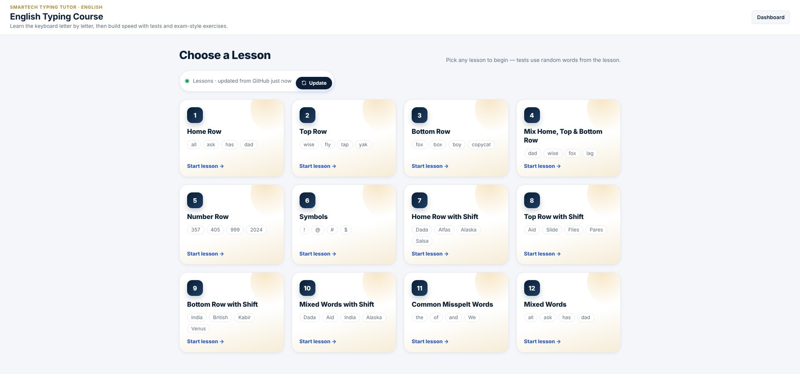
In a lesson, type the letters shown. The letter to type next is highlighted, and the timer, correct characters, wrong hits, accuracy and WPM update as you go. Use Previous Lesson, Restart Lesson and Next Lesson at the top of the lesson, or Back to lessons to return to the grid.
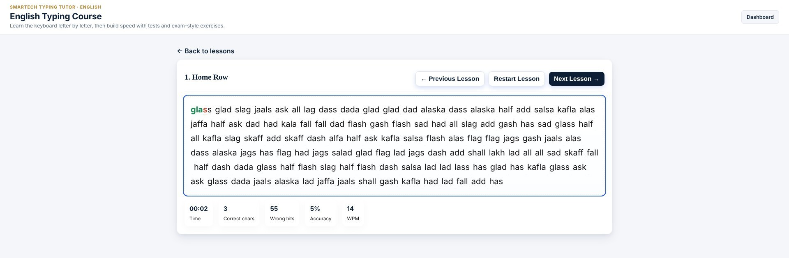
8Speed Test
For a quick timed drill, press Speed Test on the course page. It opens in the language of that course. Choose 1 Minute or 5 Minutes, then start typing: the timer begins with your first key. Press Space after each word. Speed, accuracy and word counts update live, and a result card with your WPM appears when time is up.
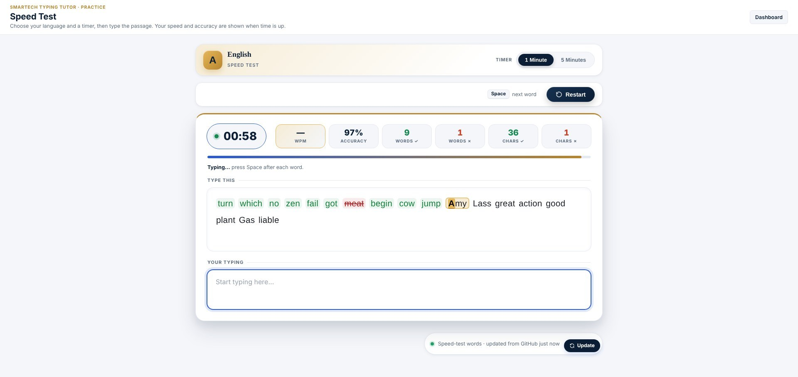
- Highlight is always on so you can see which word is next.
- Backspace is always off. You cannot go back and correct a word, as in a real exam. Type each word carefully and press Space.
- The language is fixed by the course you opened. To drill another language, open that language's course and press its Speed Test card.
9Chunk practice (exams set up in chunks)
Some exams are practised in chunks: the passage is cut into short parts. The text to copy is in the Reference Text box. Type it in the Typing Text box below, exactly as shown, including capitals and punctuation. The timer starts with your first key, and live counters show your characters, words and backspaces.
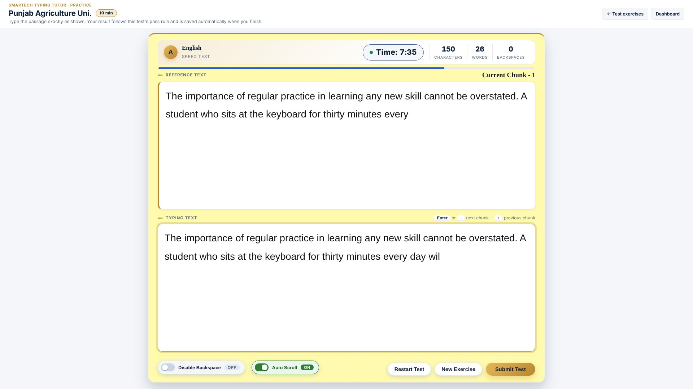
- Chunks: press Enter or ↓ to move to the next chunk (you must have typed at least 80% of the current one), and ↑ to go back.
- Disable Backspace: switch it ON to practise without correcting mistakes, as in some exams.
- Auto Scroll: ON by default. The Reference Text scrolls by itself so the word you are typing stays in view. Switch it OFF if you prefer to scroll yourself.
- Restart Test starts the same exercise again. New Exercise goes back to the list. Submit Test ends the test early.
When time ends (or you submit), your result is shown and saved. A Pass automatically creates a certificate. See Your results for how to read it.
10Mock Tests (Test Centre)
Press Mock Test on a course page to open the Test Centre and take an exam-style test such as SSC CHSL or Punjab & Haryana High Court. Each card shows the test's time, its pass rule (minimum speed and accuracy) and its status:
- Days left: you already have access. Click Open exercises. The days left are counted for that test alone, so two tests can show different numbers.
- Code needed: open the card and enter the access code your institute gave you for that test.
- Free: no code is needed.
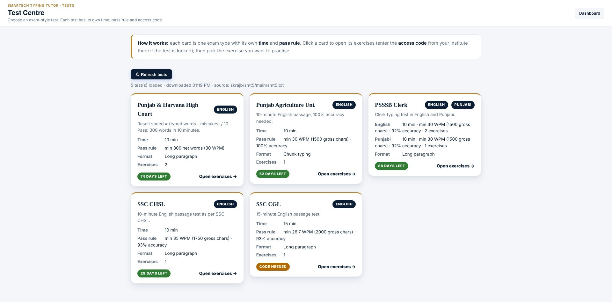
Some tests include more than one language (for example English and Punjabi). Their card shows a badge for each language, and the exercise page lists English and Punjabi as separate blocks, each with its own time, pass rule and exercise numbers. Pick the exercise from the language you want to type.
After opening a test, choose the exercise you want. The test fixes the time and decides Pass or Fail by its own rule: you need the required speed and accuracy. The rule is repeated under your result. Results record the test name, and a Pass creates a certificate for that test.
PHHC (Punjab & Haryana High Court) is judged on the words you type, not on 5 keystrokes per word. Your net words are the words typed minus your mistakes (wrong, extra, skipped or joined / split words), and your result speed is net words divided by the 10 minutes. You pass with 300 net words in 10 minutes (30 words per minute).
language: English, Punjabi in its ### TEST block and tag each exercise with its language (optional own rule per language, e.g. punjabi-wpm: 30); see test_types_format.txt. The Dashboard shows the first four tests as cards and the rest under More Typing Courses, in the order they appear in the file. Use the admin page to set the days of access for each test type separately on one key (tick the types, then fill in days or a date for each; empty uses the key's default days). Use Manage & Print at the bottom of the Dashboard to see every test and exercise and to print them on A4 sheets with the Smartech Education header. The page shows English, Punjabi and Hindi side by side: press Print all English exercises (or Punjabi / Hindi) at the top of a column to print one language only, Print all ... exercises inside a test to print that test in that language, or Print next to an exercise for a single sheet. Print all exercises at the top still prints everything.11Long paragraph exercises
For full exam-style passages, choose an exercise on a course page. New exercises are added by your institute and download automatically when the computer is online. They are kept on the computer so they still work offline.
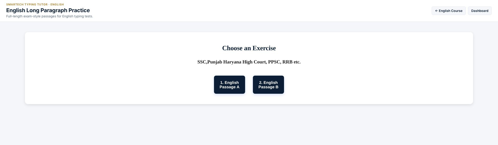
The test screen shows the whole passage in the Reference Text box and your typing box right below it. A Test Centre test shows its name and time next to the heading.
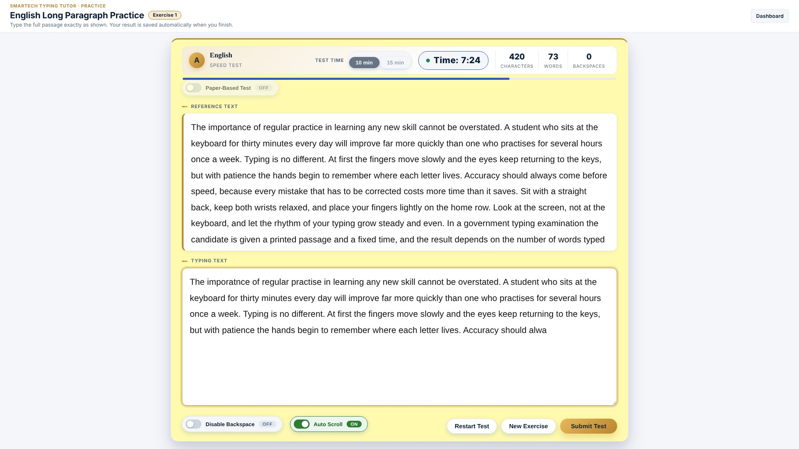
- Test mode: On-Screen (default) shows the passage above the typing box. Switch to Paper-Based to hide it and type from a printed paper; Print Paper prints the passage as a question sheet. The mode is locked while a test is running.
- Disable Backspace and Auto Scroll work the same as in chunk exercises.
- Once time is over, the test cannot be resumed and the typed text cannot be edited.
12Understanding your result
When the test ends, the Results table shows the exercise, test mode, gross characters, the error counts, gross and actual speed, time taken, accuracy and backspace count, plus the Pass / Fail rule.
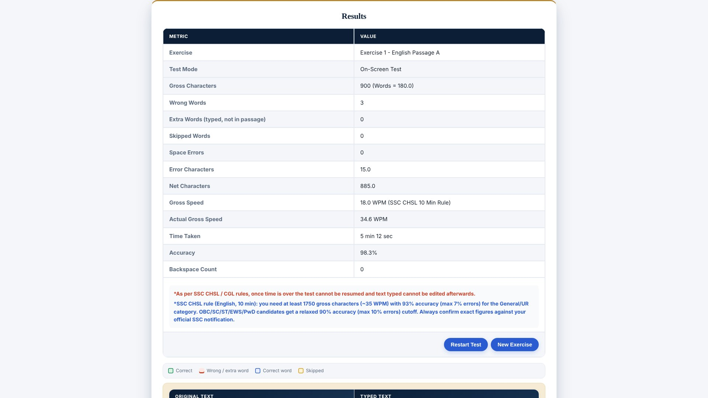
| Item | Meaning |
|---|---|
| Gross characters | Characters you typed correctly, plus the spaces between your words. |
| Wrong words | Words you typed differently from the passage. |
| Extra words | Words you typed that are not in the passage. |
| Skipped words | Passage words you missed between words you typed. |
| Space errors | Missing spaces (two words joined) or extra spaces. |
| Error characters | 5 characters for every wrong, extra or skipped word, plus 2.5 for every space error. |
| Net characters | Gross characters minus error characters. |
| Accuracy | Net characters ÷ gross characters × 100 (never shown below 0%). |
Scroll down to see the Original Text next to your Typed Text, with every mistake marked.
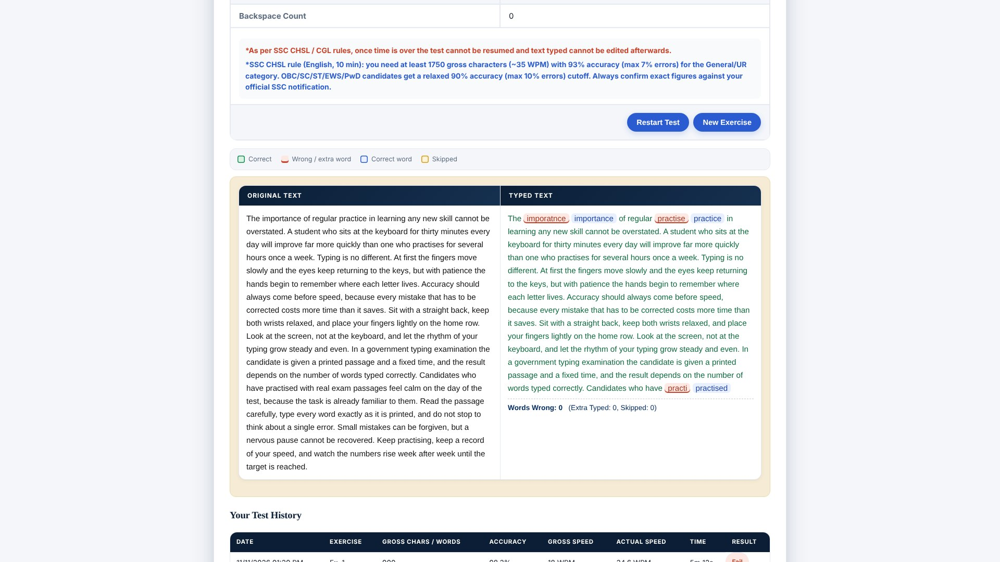
135-minute Demo test
Press 5-Minute Demo Test in the links at the bottom of the Dashboard to try a real long-paragraph test in English, Punjabi or Hindi. Pick your language and type for 5 minutes. The result is saved in My Progress for 3 days, but a demo is not a pass / fail exam: no certificate is issued and it is not sent to the leaderboard.
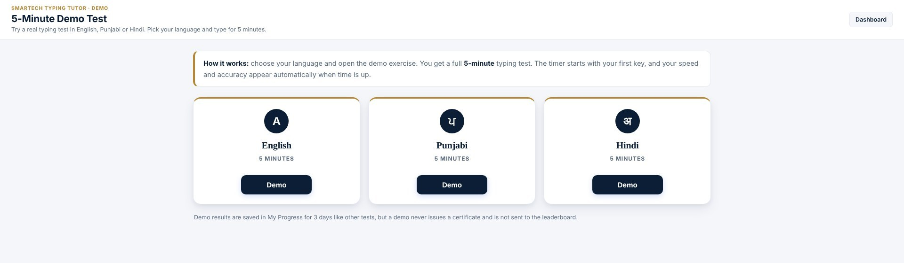
14Track your progress and certificates
Open My Progress (top-right of the Dashboard) to see the tests you have taken in the last 3 days (older results are removed automatically): which exercise it was, speed, accuracy and result. Best speed and average accuracy are shown for each language. Earned certificates are listed on the same page, and you can export the history to a CSV file that opens in Excel.
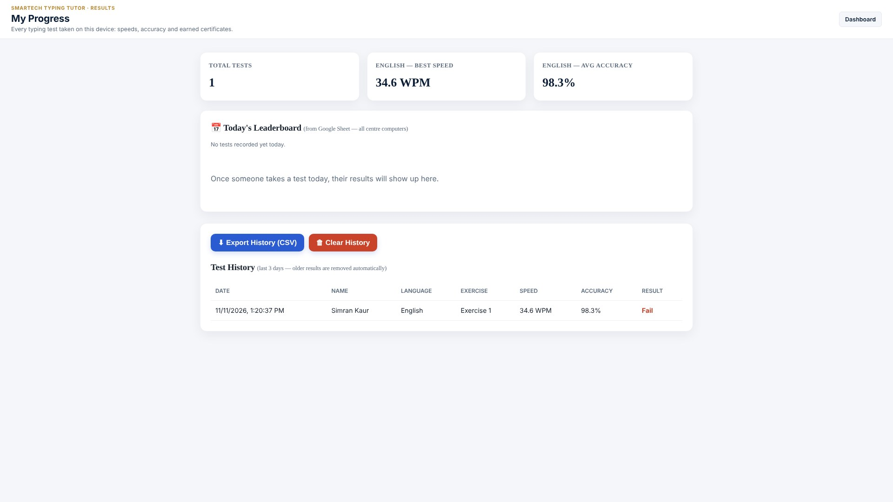
15Settings and themes
On the Dashboard, open Settings to change your name, pick a colour theme and update the content. There are five colour themes. Your choice is remembered.
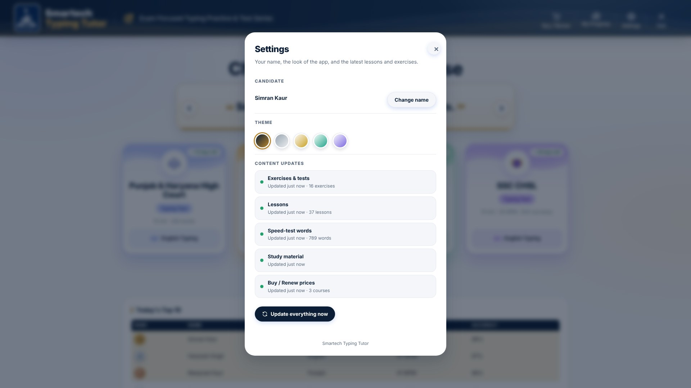
Content updates lists what your institute sends to the app (exercises and tests, lessons, speed-test words, study material and Buy / Renew prices) and when each was last updated. They update by themselves when the computer is online; press Update everything now to check at once.
Use Ctrl + + / - to make everything larger or smaller, and Ctrl + 0 to reset.
16Handy shortcuts
| Key | What it does |
|---|---|
| F11 | Full screen on or off (recommended for tests) |
| Ctrl + + / - | Zoom in / out |
| Ctrl + 0 | Reset zoom |
| Enter / ↓ | Next chunk (chunk exercises) |
| ↑ | Previous chunk (chunk exercises) |
| Space | Finish a word in Speed Test |
Note: copy, paste, text selection and right-click are switched off inside the app on purpose, to match real exam conditions.
17Questions and troubleshooting
| Problem | What to do |
|---|---|
| "Invalid activation code" | Check the code for typing mistakes and make sure you used the code for the right course or test. |
| "Already activated on another computer" | Deactivate it on the old computer, or contact your institute with your Device ID. |
| Course asks to activate again | The days for that course have ended. Each course or test has its own end date, shown on the Activation page. Use Buy / Renew to see the renew price, then ask your institute for a new code. |
| One test stopped working but the others still open | That test's own days have ended. The others from the same code are not affected. Ask your institute to extend that test. |
| A course card says "Code needed" or is locked | Open the course and enter its access code. If the code was blocked or has expired, ask your institute for a new one. |
| I cannot see all my courses on the Dashboard | Only four show at a time. Press More Typing Courses under the cards. |
| I cannot find the Speed Test, Demo Test or Mock Tests | Speed Test and Mock Test are the cards at the top of every course page. The 5-Minute Demo Test is in the links at the bottom of the Dashboard. |
| Speed Test will not let me use Backspace | This is intended: Backspace is always off in the Speed Test, as in a real exam. |
| Activation fails | Check the internet connection. Activation and the leaderboard are the only parts that need it. |
| The course or exercise list is empty | Connect to the internet once so the exercises can download. After that they work offline. |
| Buy / Renew shows old prices | Connect to the internet and press Update everything now in Settings. Prices update from your institute's file. |
| Punjabi or Hindi letters do not appear | Add the language and keyboard layout in Windows Settings > Time & Language, then switch to it with Alt + Shift. |
| I cannot change Test Mode in the middle of a test | It is locked while a test runs. Press Restart Test, then change it. |
| Today's Top 10 is empty or says "Unable to load leaderboard" | It needs an internet connection. Check the connection and reload the Dashboard. Your own results are always saved on the computer. A new day starts with an empty leaderboard until the first test is finished. |
Still stuck? Open Contact and email us with your Device ID and a short description.